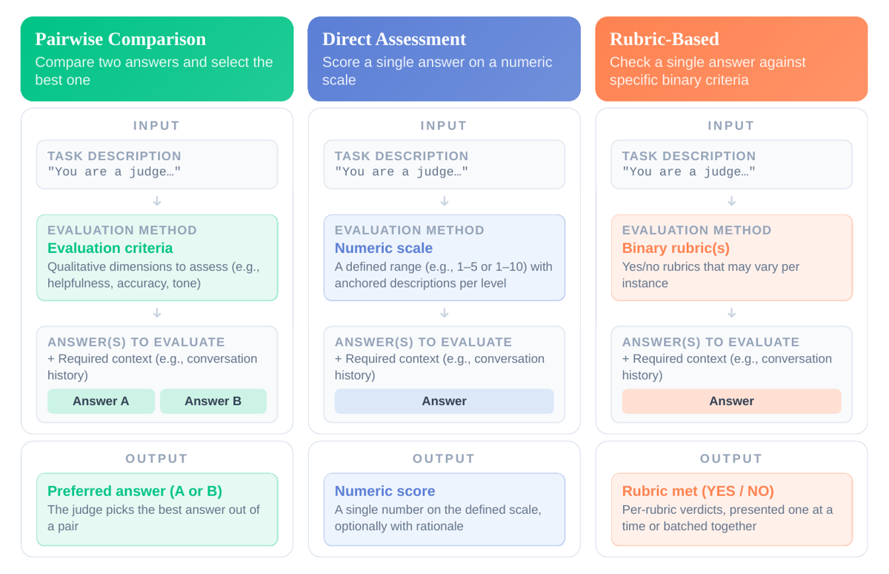

Première mesure systématique du self-preference bias (SPB) en évaluation par rubriques binaires : 12 juges × 12 générateurs, sur deux benchmarks à vérité terrain programmatique (IFEval, LiveCodeBench) plus un benchmark à rubriques humaines subjectives (HealthBench), avec la métrique HSPP-Rubrique = FPR du juge sur ses propres sorties ÷ FPR moyen sur les sorties de modèles hors-famille, bootstrap rubrique-niveau 1 000 rééchantillonnages partout.
Claim principal, précisément : parmi les rubriques qu'un générateur échoue objectivement, un juge peut être >50 % plus susceptible de les marquer satisfaites quand la sortie est la sienne — et ceci même quand le critère est programmatiquement vérifiable, donc hors de toute ambiguïté de rubrique.
⚠️ Mon verdict de lecture, qui diffère de l'abstract sur trois points et que la 7.0 détaille : 1. le « >50 % » est vrai sur LiveCodeBench pour 6 juges sur 12 et faux sur IFEval (max 1,47, IC traversant 1) ; 2. les « 10 points » de HealthBench sont le delta centré d'un Gemma-4B se notant lui-même, pas un écart de score frontier — la valeur frontier est 4,63 ; 3. la phrase sur l'ensembling (« les moteurs de la mitigation sont la qualité des juges et, dans une moindre mesure, la diversité de familles ») est contredite par le code du papier lui-même : la régression imprimée ne mesure aucune mitigation, et celle qui la mesure est dans le dépôt, non publiée. Je l'ai recalculée sur leurs propres données : le signe de la diversité de familles s'inverse (§7.0, §3).
Pas de construction de tâches : trois benchmarks existants, 12 générations par benchmark (une par modèle), puis 12 jugements de chaque génération.
| Benchmark | Volume | Rubriques | Vérité terrain | Contamination |
|---|---|---|---|---|
| IFEval [§2.5] | 541 prompts | une rubrique binaire par instruction (« no commas »…) ; 10 008 verdicts rubrique dans le pool d'accord [Tab. 11] | programmatique (vérificateur d'instruction) | non discutée — ⚠️ IFEval (2023) est quasi certainement dans le pré-entraînement des 12 modèles ; le mot « contamination » n'apparaît qu'une fois dans tout le papier, pour LCB |
| LiveCodeBench [§2.5, note 4] | 177 problèmes, 5 685 tests/rubriques distincts ; split release_v6, contests ≥ 2025-01-04 ; « only tests that every model managed to judge » |
un test unitaire privé = une rubrique binaire | programmatique (exécution des tests privés) | contrôlée par la date de contest ; ⚠️ le filtre « tests que tous les modèles ont su juger » est un filtrage post-hoc par le juge, non analysé |
| HealthBench [§2.5] | 5 000 instances, 48 562 rubriques binaires uniques | rubriques écrites par des humains, pondérées (poids caché au juge), certaines négatives (le générateur est pénalisé s'il les satisfait) | aucune → référence = vote majoritaire de 5 juges, un par famille (Gemma-27B, Llama-Mav, Qwen-235B, GPT-oss-120B, Claude-Sonnet) | non discutée |
Sans objet : le papier ne construit aucun environnement RL, aucun outil, aucune trajectoire. À dire explicitement, c'est une information sur ce que le papier peut et ne peut pas fonder.
Ce qui tient lieu de harness, et qui compte pour nous :
max_completion_tokens = 16384 [ducttape/tconfs/base.tconf]. Le dépôt contient un audit de troncature dédié (extended/scripts/exp25_lcb_truncation.py) comptant les générations LCB qui touchent le plafond — ses chiffres ne sont dans aucune version du papier.grep -i 'temperature\|seed\|sampling' sur la source LaTeX → 0 occurrence. Conséquence directe en §3 (plafond de bruit).Le papier est un audit de vérifieur. C'est sa valeur pour nous.
O_rub(J,G) = #{juge dit satisfait ∧ référence dit non satisfait} / #{référence dit non satisfait}. C'est le FPR du juge restreint aux sorties d'un seul générateur, avec le bon dénominateur : « among rubrics that a generator objectively fails, how often does the judge incorrectly mark them as passed? »O(J,J) / moyenne sur G ∈ S_J de O(J,G), où S_J = générateurs ni J ni de la famille de J. Le quotient neutralise la clémence générale du juge. HSPP = 1 ⇒ pas de self-preference. C'est un ratio : tout chiffre « +50 % » est relatif, jamais absolu.Non — seuls les faux positifs sont mesurés. O_rub est entièrement du côté FP (dénominateur = rubriques que la référence déclare non satisfaites). Le FNR du juge (rubriques satisfaites marquées ratées) n'apparaît nulle part. MRA les mélange dans un seul agrégat. ⚠️ C'est la case manquante classique du corpus, et elle compte ici : rien n'exclut qu'un juge à HSPP bas soit simplement un juge globalement sévère qui paie son faible FPR en faux négatifs.
Sous-cas important : sur une rubrique négative, la population « erreur possible » est inversée — « positive rubrics the reference marks unmet, negative rubrics it marks met » [App. K]. Donc pour une rubrique négative, « surestimer » = le juge dit que la violation n'a pas eu lieu alors que la référence dit qu'elle a eu lieu. C'est exactement le mode de panne d'un critère de non-événement.
| Quantité | Mesurée ? |
|---|---|
| Reproductibilité du juge (même juge, mêmes sorties, plusieurs tirages) | non — jamais. Pas de température, pas de seed, pas de re-tirage dans le papier ni dans les scripts. Aucune borne inférieure sur ce qu'un ensembling peut gagner. |
| Accord inter-juges | oui [Tab. 11, p. 20] : Krippendorff α (binaire, nominal) des 5 juges têtes de famille — IFEval 0,306 (10 008 items) ; LCB 0,353 (69 775 items) |
| Accord juge↔humain | partiellement : MRA contre vérité programmatique (IFEval 0,81–0,92 ; LCB 0,46–0,97) ; sur HealthBench, méta-éval officielle F1 pairée équilibrée 0,61–0,68 pour les 5 juges de référence [Tab. 4, p. 17]. Aucun accord inter-annotateurs humains comme plafond. |
⚠️ La référence HealthBench est un ensemble de juges dont chaque membre est aussi un générateur et un juge de l'étude. Les auteurs l'assument et le bornent par LOFO/LOO [Tab. 23] : les juges GPT bougent le plus (GPT-oss-120B 1,00 → 1,26/1,30 ; GPT-5 1,54 → 1,67/1,68), les autres de ≤ 0,04 ⇒ les chiffres HealthBench publiés sont conservateurs. C'est bien fait. Mais une référence à F1 0,61–0,68 reste une référence faible, et les deux benchmarks qui portent le résultat incontestable sont les programmatiques.
Non, et c'est la limite structurelle du papier pour nous : tout est statique. Aucune politique ne s'optimise contre le juge. Les auteurs l'écrivent en conclusion : « For future work, extending this analysis to reward modelling pipelines is a natural next step. We expect self-preference bias to accelerate reward hacking, making training plateau and degenerate faster. » — une attente, pas un résultat.
Sans objet. Aucun entraînement, aucun RL, aucun hyperparamètre d'optimisation. Le seul « modèle ajusté » est statistique : une régression logistique mixte bayésienne sur HealthBench [App. K] — BinomialBayesMixedGLM (statsmodels), variational Bayes champ moyen, intercepts aléatoires croisés sur juge et instance, sur un sous-échantillon de 400 instances (n = 211 872 jugements). Les auteurs écrivent eux-mêmes : « variational posterior standard deviations are known to be slightly optimistic, so intervals should be read as approximate ».
⚠️ Lu dans le dépôt, pas dans le PDF : extended/scripts/exp07_mixed_effects.py déclare deux modèles — « (1) Logit with judge fixed-effect dummies + instance-clustered robust SEs [headline, all data] ; (2) BinomialBayesMixedGLM with random intercepts on judge and instance [subsample, confirm] ». Le papier n'imprime que le (2), celui que le code désigne comme la confirmation sur sous-échantillon. Le modèle que le code appelle headline, sur toutes les données et avec des erreurs-types robustes groupées par instance, n'apparaît nulle part dans le papier.
Le papier n'entraîne rien, donc pas de reward hacking observé. Ce qu'il documente, ce sont les modes de panne du vérifieur eux-mêmes :
| Panne | Détection | Correction proposée | Évaluée ? |
|---|---|---|---|
| Faux positif conditionné à l'échec, sur sa propre sortie (le résultat central) | HSPP-Rub, dénominateur = rubriques objectivement ratées | « stratégies plus intriquées : entraînement du juge, activation steering » [§3] | non — aucune des deux n'est testée |
| Biais de famille (pas seulement de soi) | HSPP-Fam [Tab. 5, p. 18] : GPT-5 11,91 [9,89 ; 14,29] sur LCB, GPT-oss-120B 8,95 ; Gemma-4B 1,22 sur HB | juge hors-famille | implicite, non chiffrée séparément |
| Faux positifs corrélés entre juges (ce qui survit au vote) | Krippendorff α sur le sous-ensemble « tous les générateurs échouent », où la vérité est constante : IFEval α = 0,308 (n = 60), LCB α = 0,154 (n = 1 850) | — | constaté, non corrigé. Citation : « Since ground truth is constant on this subset, positive agreement can only reflect shared errors: judges mark the same failed rubrics as passed. These correlated false positives explain part of the self-preference that survives majority voting. » |
| Granularité SR plus biaisée que AR | Fig. 2 (p. 6) | — | constaté |
| Raisonnement du juge qui aggrave | Tab. 12 | — | constaté |
| Troncature des générations au plafond de tokens | exp25_lcb_truncation.py dans le dépôt |
— | script présent, résultats absents du papier |
⚠️ Mode de panne non couvert, et c'est le nôtre : rien sur l'omission. O_rub ne regarde que des rubriques ratées sur des livrables produits. Pas d'abstention, pas de couverture, pas de sous-population critique autre que la dureté de jugement.
Pipeline ducttape (ducttape/tasks/{setup,generation,evaluation,main}.tape), modèles ouverts servis en vLLM local (hosted_vllm/…), GPT-5 via Azure, Claude via Vertex AI [ducttape/tconfs/base.tconf]. max_workers paramétrable.
Aucun chiffre de coût, de débit ou de durée n'est donné — ni dans le papier, ni dans le dépôt. Le mot « cost » n'apparaît que pour justifier l'exclusion des modèles propriétaires de AR/DA/PWC. L'ordre de grandeur est pourtant massif : en SR, un appel de juge par rubrique × 12 juges × 12 générateurs ; sur HealthBench seul, cela fait plusieurs millions d'appels. ⚠️ Pour nous, le coût du réglage SR est l'information manquante la plus chère de ce papier.
| Chiffre annoncé (abstract / intro) | Source dans le corps | Verdict |
|---|---|---|
| « the first study of SPB in rubric-based evaluation » | §6.1–6.2 : tous les travaux cités (Koo, Panickssery, Chen, Li, Verga, Roytburg, Wataoka) portent sur PWC/DA | non vérifiable ici (revendication de primauté) ; la revue de l'état de l'art est cohérente avec |
| « IFEval and LiveCodeBench, benchmarks with programmatically verifiable rubrics » | §2.5 : IFEval = 541 prompts, une instruction vérifiable par programme → une rubrique binaire ; LCB = chaque test unitaire privé → une rubrique binaire, split ≥ 2025-01-04, 177 problèmes / 5 685 tests distincts | confirmé. C'est le point qui rend le résultat incontestable : la vérité terrain n'est pas un juge |
| « among rubrics where generators fail, judges can be more than 50 % more likely to incorrectly mark them as satisfied when the output is their own » | Tab. 1 (p. 6), HSPP-Rub (Self) | sur-généralisé. Vrai sur LiveCodeBench seulement, pour 6 juges sur 12, 4 familles sur 5 : Gemma-4B 1,54 [1,38 ; 1,73], Claude-Haiku 1,71 [1,57 ; 1,85], Claude-Sonnet 1,78 [1,58 ; 1,99], Qwen-4B 2,21 [2,03 ; 2,42], GPT-oss-120B 5,97 [4,91 ; 7,18], GPT-5 20,15 [16,57 ; 24,58]. Faux sur IFEval : le maximum est GPT-5 1,47 [0,48 ; 2,53], IC traversant 1, et « statistical significance only holds for two systems » [§3] (Gemma-27B 1,08 [1,02 ; 1,14] et Qwen-235B 1,30 [1,11 ; 1,48]). Sur HealthBench, un seul juge dépasse 1,5 : GPT-5 1,54 [1,44 ; 1,64]. Aucun juge Llama ne dépasse 1,5 nulle part (0,71 à 1,34) |
| « SPB persists even when evaluation criteria are entirely objective » | Tab. 1, LCB + IFEval | confirmé au sens faible (ratio > 1 significatif) : sur LCB, 8 juges sur 12 ont un IC entièrement au-dessus de 1 ; sur IFEval, 2 sur 12. ⚠️ « persists » ≠ « >50 % » : les deux phrases de l'abstract n'ont pas la même force et sont présentées ensemble |
| « ensembling multiple judges helps mitigate SPB, but without fully eliminating it » | Tab. 7 (IFEval, p. 19) et Tab. 8 (LCB, p. 19) | sur-généralisé, et le résidu est le vrai chiffre. LCB : 4 réductions significatives sur 5 — Gemma-27B 1,03 → 0,41 (Δ −0,62 [−0,70 ; −0,53]), Llama-Mav 1,34 → 0,48 (Δ −0,86), Claude-Sonnet 1,78 → 1,29 (Δ −0,50 [−0,76 ; −0,20]), GPT-5 20,15 → 4,18 [3,64 ; 4,69] (Δ −15,97 [−20,31 ; −12,50]) ; Qwen-235B empire 0,83 → 0,95 (Δ +0,12 [−0,17 ; +0,37]). IFEval : aucune réduction individuellement significative — les auteurs l'écrivent (« mostly negative but not individually significant »), l'abstract non |
| « On HealthBench … SPB skews model scores by up to 10 points » | Fig. 5 (p. 8) + Tab. 28 (p. 27) | sur-généralisé. Le chiffre existe : +10,90 [+10,27 ; +11,55], mais c'est Gemma-4B se notant lui-même — le plus petit modèle du panel. Et c'est un delta centré (écart du juge pour ce générateur, moins l'écart moyen de ce juge sur tous les générateurs), pas un écart de score brut. Surtout : la diagonale n'est pas uniformément positive — 6 cellules d'auto-évaluation significativement positives (+10,90 ; +4,63 ; +2,62 ; +1,52 ; +0,96 ; +0,88), 4 significativement négatives (Gemma-12B −2,07 ; GPT-oss-120B −1,05 ; Gemma-27B −1,08 ; Qwen-30B −0,49), 2 non significatives. Sur rubriques subjectives, l'auto-dépréciation est presque aussi fréquente que l'auto-préférence |
| intro : « GPT-5 … overestimates its performance by about 4 points relative to an ensemble of judges » | Fig. 5 / Tab. 28 : +4,63 [+4,13 ; +5,16] | confirmé (en lisant « points » comme delta centré ×100 sur l'échelle HealthBench pondérée) |
| « negative rubrics … particularly susceptible » | Tab. 24 (p. 25), interaction is_self × Negative rubric : coef +0,081, SD 0,035, IC95 [+0,012 ; +0,149], odds ratio 1,084 |
sur-généralisé. L'effet est réel et du bon signe, mais c'est +8,4 % en odds — le plus petit de tous les effets significatifs du modèle, et le corps du papier le dit (« though by a smaller margin than certain themes »), pas l'abstract. ⚠️ Et sa borne basse 0,012 repose sur des SD que les auteurs qualifient eux-mêmes d'« optimistes » (VB champ moyen sur 400 instances) : l'effet n'est pas robuste à une inférence conservatrice |
| « subjective topics like communication and emergency referrals are particularly susceptible » | Tab. 24 : Communication +1,877 [+0,124 ; +3,630], OR 6,53 ; Emergency +0,767 [+0,169 ; +1,365], OR 2,15 ; Global health +0,761, OR 2,14 ; Complex +0,411, OR 1,51 | confirmé, mais ⚠️ l'IC de Communication est énorme (OR entre 1,13 et 37,7) et les thèmes non significatifs sont Context (+0,255), Health (+0,237), Hedging (+0,110). Les axes de rubrique (accuracy / completeness / instruction-following / communication-quality / context-awareness) n'ont aucun effet self-spécifique (tous les IC traversent 0) |
| intro : « SPB in RB is similar to DA but significantly less severe than PWC » | Fig. 2 (p. 6), coordonnées lues dans la source : HSPP-Instance PWC jusqu'à 1,65 / 1,57 / 1,45, SR/AR/DA quasi tous dans 0,95–1,21 | plausible mais non testé. Le mot « significantly » n'est adossé à aucun test ni IC : les points PWC sont tracés sans intervalle |
| intro : « inter-judge agreement can serve as a practical signal for flagging high-SPB rubrics » | Fig. 4 (p. 7) : en filtrant par seuil d'accord inter-juges, HSPP-Rubrique moyen passe de 1,137 (seuil 0,50) à 1,025 (seuil 0,98) ; HSPP-Instance de 1,465 à 1,074, mais non monotone (1,55 à 0,55 ; 0,897 à 0,90 ; 1,11 à 0,97) | confirmé comme tendance, aucun IC sur la courbe, et l'effet rubrique-niveau ne vaut que 0,11 point de ratio |
| « controlling for instance difficulty and judge quality » | Tab. 2 (p. 8), Tab. 13–19 | confirmé — trois déconfondages indépendants (détail plus bas). ⚠️ le proxy de dureté est la MRA moyenne des 12 juges sur la cellule : une dureté définie par les juges eux-mêmes |
| App. H : « the main drivers of ensemble-based mitigation are the inclusion of high-quality judges, and, to a lesser extent, family diversity » | Tab. 9 (p. 19) et Tab. 10 (p. 20) | contredit par sa propre table, et par son propre code. Voir l'encadré ci-dessous — c'est le point le plus important de cette section |
Les deux régressions imprimées [Tab. 9, Tab. 10] énumèrent les Σ_{k=2..6} C(12,k) = 2 497 comités et régressent sur taille, nombre de familles, MRA moyenne :
| IFEval (R² = 0,252) | LiveCodeBench (R² = 0,227) | |
|---|---|---|
| Taille d'ensemble | −0,0070 [−0,0092 ; −0,0047] | −0,0243 [−0,1121 ; +0,0635] (n.s.) |
| # familles | +0,0136 [+0,0106 ; +0,0166] | +0,0475 [−0,0687 ; +0,1636] (n.s.) |
| MRA moyenne | +2,3279 [+2,1669 ; +2,4889] | +17,6089 [+16,2813 ; +18,9365] |
Lu littéralement : plus de familles ⇒ HSPP plus élevé (significatif sur IFEval), juges meilleurs ⇒ HSPP beaucoup plus élevé. C'est l'inverse de ce que la prose en tire.
L'explication est dans le code. extended/scripts/exp23_ensemble_factors.py : « For each [ensemble], the aggregate self-preference = mean of the members' individual HSPP-Rub-Self point estimates ». ⇒ la variable expliquée n'implique aucun vote, aucun ensembling. Elle décrit quels comités contiennent des juges à fort SPB — et comme GPT-5 a à la fois la meilleure MRA et le pire HSPP, le coefficient MRA est mécaniquement positif. Cette régression ne peut pas, structurellement, mesurer une mitigation.
⚠️ Et la bonne analyse existe dans le dépôt, non publiée — précédent exact de baseline_random_weight.py chez 2610.21214. extended/scripts/exp03_ensemble_ablation.py, docstring : « relate the committee's residual self-preference (median per-member HSPP-Rub-err ratio, the committee judging its own members' outputs) to: size, number of distinct families, and mean member competence (MRA) ». Aucun de ses chiffres n'est dans le papier.
Je l'ai recalculée sur leur CSV versionné sandbox/results/tables/committee_rubric_metrics.csv (IFEval, mode SR, pool de 12 juges, 2 760 comités de taille 2–10 à MRSPB_median non vide sur 4 083 lignes ; MRSPB = FPR_self − FPR_other du comité sur les sorties de ses membres, donc un écart absolu, pas un ratio ; MRA par juge reprises des coordonnées de Fig. 2) :
| Variable | Coefficient | IC95 (OLS, erreurs-types naïves) |
|---|---|---|
| # familles | −0,00548 | [−0,00666 ; −0,00430] — la diversité RÉDUIT le biais résiduel |
| Taille d'ensemble | +0,00279 | [+0,00227 ; +0,00332] — à diversité fixée, ajouter des juges l'AGGRAVE |
| MRA moyenne | −0,15346 | [−0,20555 ; −0,10137] |
R² = 0,049. Les deux signes qui comptent sont inversés par rapport à la table imprimée. Stratifié par taille (donc sans aucune confusion taille↔diversité), c'est monotone à chaque taille : à taille 6 — 2 familles +0,0304, 3 familles +0,0172, 4 familles +0,0072 ; à taille 5 — 2 fam. +0,0260, 3 fam. +0,0165, 4 fam. +0,0086 ; à taille 4 — 2 fam. +0,0201, 3 fam. +0,0096, 4 fam. +0,0039.
Robustesse, en excluant tous les juges Llama (les seuls à HSPP < 1, donc les suspects d'entraîner le résultat), n = 1 013 : # familles −0,00688 [−0,00827 ; −0,00548] (tient), taille +0,00221 [+0,00155 ; +0,00288] (tient), MRA moyenne −0,0303 [−0,0957 ; +0,0350] — perd sa significativité. ⇒ c'est la diversité de familles qui est robuste, pas la qualité des juges — exactement le contraire de la phrase du papier.
Et les extrêmes sont parlants : les trois pires comités mesurés sont tous mono- ou bi-famille Gemma (Gemma-12B+Gemma-4B +0,0546, Gemma-27B+Gemma-4B +0,0543, Gemma-12B+Gemma-4B+Qwen-30B +0,0448) ; les trois meilleurs sont des comités à 4 familles sans Gemma (−0,0372 à −0,0344). 24,6 % seulement des 2 760 comités atteignent un biais résiduel ≤ 0 ; moyenne +0,0101, médiane +0,0096.
⚠️ Réserves sur mon propre calcul, à ne pas omettre : (i) c'est le CSV sandbox pré-camera-ready, IFEval SR uniquement, pas LiveCodeBench ; (ii) MRSPB est un écart absolu de FPR, pas le ratio HSPP du papier ; (iii) les 2 760 comités partagent des membres, donc mes IC OLS sont trop étroits — le signe et la monotonie stratifiée sont les résultats solides, pas les bornes ; (iv) 1 323 lignes SR à MRSPB_median vide ont été écartées.
Verdict 7.0 : incohérent sur trois points, et sur le point qui m'intéresse le plus. Les chiffres bruts sont tous retrouvables et exacts — le papier ne fabrique rien. Mais l'abstract généralise un résultat LiveCodeBench à « IFEval and LiveCodeBench », présente un delta centré de Gemma-4B comme un écart de score de 10 points, qualifie de « particularly susceptible » un odds ratio de 1,08, et la section ensembling tire une conclusion que sa propre table contredit et que son propre code dément.
Valeurs absolues derrière les ratios [Tab. 25–27, p. 25–26] — c'est ce qu'il faut regarder, pas les ratios :
| Juge | LCB : FP/éligibles (soi) | FPR soi | FPR autres (moy. par gén.) | Écart absolu | HSPP |
|---|---|---|---|---|---|
| GPT-5 | 128 / 337 | 0,3798 | 0,0188 | +36,1 pts | 20,15 |
| GPT-oss-120B | 115 / 578 | 0,1990 | 0,0333 | +16,6 pts | 5,97 |
| Qwen-4B | 532 / 1 849 | 0,2877 | 0,1299 | +15,8 pts | 2,21 |
| Claude-Sonnet | 253 / 853 | 0,2966 | 0,1662 | +13,0 pts | 1,78 |
| Claude-Haiku | 396 / 1 042 | 0,3800 | 0,2227 | +15,7 pts | 1,71 |
| Gemma-4B | 409 / 2 944 | 0,1389 | 0,0904 | +4,9 pts | 1,54 |
| Llama-Mav | 1 629 / 2 095 | 0,7776 | 0,5789 | +19,9 pts | 1,34 |
⚠️ Le ratio exagère et sous-estime à la fois. GPT-5 à 20,15× n'est spectaculaire que parce que son FPR hors-famille est de 1,9 % — mais l'écart absolu, +36 points de FPR, est le plus gros du tableau et c'est lui qui compte pour un reward. À l'inverse Llama-Mav, HSPP 1,34 (« seulement +34 % »), vaut +19,9 points absolus de FPR. Et le dénominateur de GPT-5 est de 337 rubriques : c'est le plus petit de tous, parce qu'un bon générateur échoue peu.
Sur IFEval, les dénominateurs sont minuscules : GPT-5 7 FP / 32 rubriques éligibles, Claude-Sonnet 23/64, Qwen-235B 52/65. C'est l'explication mécanique de l'absence de significativité sur IFEval — et une leçon directe : sur un benchmark où le générateur échoue rarement, on ne peut pas mesurer son biais sur ses propres échecs.
Aucun. Trois benchmarks analysés en parallèle, jamais de généralisation testée d'un vers l'autre. Et les trois ne s'accordent pas : un juge Llama-Mav est à 1,12 / 1,34 / 0,71 (IFEval / LCB / HealthBench) ; Qwen-4B à 1,06 / 2,21 / 0,96 ; GPT-5 à 1,47 / 20,15 / 1,54. ⚠️ Le HSPP d'un juge n'est pas une propriété du juge : c'est une propriété du couple (juge, tâche). Conséquence pour nous : un chiffre mesuré sur IFEval ou LCB ne se transporte pas sur une tâche juridique. Il faut le remesurer sur la nôtre.
Riches et bien faites : 4 paradigmes de juge · effort de raisonnement ×4 · stratification par dureté (3 benchmarks) · tertiles de qualité · un-contre-un à capacité appariée + joint ref-negatives · référence LOFO / LOO · 3 mécanismes (longueur, perplexité, auto-reconnaissance) · seuil d'accord inter-juges · comités (2 497 énumérés) · HSPP self et famille.
exp03 resté dans le dépôt.expNN_*.py avec drapeaux --test, extended/tests/test_core.py, et les CSV dérivés IFEval/HealthBench versionnés dans sandbox/results/tables/ — j'ai pu y recalculer un résultat que le papier ne publie pas, ce qui est la meilleure preuve de reproductibilité du corpus. ⚠️ Réserves : les jugements bruts (experiments/ducttape_outputs/) ne sont pas versionnés, les tables LiveCodeBench non plus, et rejouer demande un cluster vLLM + des credentials Azure (GPT-5) et Vertex (Claude).evidence : 5/6 (manquant : coherence).
Solide sur le fait, incohérent sur la formulation, et décisif pour une décision de conception. Ce qui est établi : (1) sur des rubriques programmatiquement vérifiables, un juge a un FPR plus élevé sur ses propres échecs que sur ceux de modèles hors-famille — significativement pour 8 juges sur 12 sur LiveCodeBench, 2 sur 12 sur IFEval ; (2) ce n'est pas un artefact de capacité du générateur — le contrôle « rubriques échouées par les deux » le confirme et parfois l'amplifie ; (3) le biais est de famille autant que de soi (GPT-5 : 11,91 au niveau famille sur LCB) ; (4) il survit au vote majoritaire de 5 juges de 5 familles, avec un résidu de 4,18 pour GPT-5 sur LCB, et le mécanisme du résidu est identifié : faux positifs corrélés (α = 0,154–0,308 là où la vérité est constante) ; (5) l'auto-reconnaissance sépare le biais (1,88 vs 0,72) ; (6) plus de raisonnement du juge augmente le biais.
Ce qui n'est pas établi : l'ampleur « >50 % » comme fait général ; « 10 points » comme écart de score frontier ; la susceptibilité particulière des rubriques négatives (OR 1,08, borne basse 0,012 sur une inférence variationnelle que les auteurs disent optimiste) ; le rôle de la qualité des juges contre la diversité de familles dans l'ensembling — ici le papier conclut à l'envers de ses propres données ; et tout ce qui concerne un régime d'optimisation : le papier mesure une évaluation statique et le dit.
À utiliser comme borne inférieure, jamais comme estimation. Toutes les mesures sont en régime statique ; la littérature du corpus montre qu'un même juge sous pression d'optimisation se dégrade d'un ordre de grandeur de plus.

Ce qu'il faut voir : la seule figure extractible, et elle pose le cadre dont tout le reste dépend. En RB, le juge n'ordonne rien et ne note rien sur une échelle : il émet un verdict binaire par critère. C'est exactement la forme de notre canal de reward — un vecteur de booléens, un par exigence. Tout l'intérêt du papier est que cette forme, réputée immunisée contre les pannes de PWC (ordre de présentation) et de DA (calibration d'échelle), n'est pas immunisée contre la self-preference : le biais ne vient pas de la comparaison ni de l'échelle, il survit à leur suppression. À noter aussi la variante SR contre AR qui sort du même schéma : présenter les rubriques une par une (ce qu'on ferait naturellement pour du crédit partiel par critère) élicite plus de biais que toutes d'un coup [§3].
Fig. 5 — matrice des deltas de score centrés sur HealthBench (p. 8 du PDF, IC en Tab. 28 p. 27). Non extractible (TikZ). Ce qu'il faut y lire : 12 juges en lignes, 12 générateurs en colonnes, chaque cellule = écart du juge pour ce générateur moins l'écart moyen de ce juge. La diagonale est encadrée, les blocs de famille en pointillés. Deux choses sautent aux yeux et une seule est dans l'abstract : (i) le bloc Gemma est orange vif — les juges Gemma sur-notent les modèles Gemma, jusqu'à +10,90 pour Gemma-4B sur lui-même ; (ii) la colonne GPT-5 est bleue chez tout le monde sauf chez GPT-5 (−12,53 chez Gemma-4B, −8,14, −7,52, −7,44, −6,37…) et +4,63 chez GPT-5 — le meilleur générateur est systématiquement sous-noté par les autres et sur-noté par lui-même. (iii) Ce que l'abstract tait : quatre cellules diagonales sont significativement négatives.
Fig. 3 — impact du comité à 5 familles sur IFEval (p. 7 du PDF ; chiffres en Tab. 7 p. 19). Non extractible (pgfplots). Panneau gauche : chaque juge relié de son HSPP individuel à son HSPP sous le comité — GPT-5 1,466 → 1,096, Qwen-235B 1,297 → 1,194, Llama-Mav 1,121 → 0,968, Gemma-27B 1,084 → 1,081, Claude-Sonnet 0,982 → 0,989. Panneau droit : toutes les MRA convergent vers 0,9117, la valeur unique du comité. ⚠️ C'est la lecture que la figure rend visible et que le texte ne commente pas : le comité à 5 juges atteint 0,9117 de MRA alors que GPT-5 seul fait 0,9128 — cinq fois le coût pour faire marginalement moins bien que le meilleur membre. L'ensemble bat la moyenne des membres, pas le meilleur. Et sur IFEval, aucune des réductions de HSPP n'est individuellement significative [Tab. 7].
| Ingrédient | Choix du papier | Équivalent juridique | Transfert | Ce qui manque |
|---|---|---|---|---|
| Source des tâches | 3 benchmarks publics repris tels quels ; 2 avec vérité programmatique (instructions IFEval, tests unitaires LCB), 1 avec rubriques humaines pondérées (HealthBench, 48 562 rubriques) | LAB / Vals : memo, recherche de sources, revue contractuelle — aucune vérité exécutable | non pour la source ; direct pour la leçon : il faut un sous-ensemble à vérité mécanique (citation existe / juridiction correcte / délai respecté / clause présente) séparé du reste, sinon on ne peut pas mesurer le biais du tout | un étage de critères juridiques programmatiquement décidables — c'est ce qui rend leur résultat incontestable et notre mesure possible |
| Vérifieur | juge LLM, verdict binaire par rubrique, sans référence, sans poids, sans trajectoire ; HSPP = FPR soi ÷ FPR hors-famille, dénominateur = rubriques objectivement ratées | juge Gemini sur rubrique juridique | direct — la métrique HSPP se transpose telle quelle : il suffit d'un jeu de livrables étiquetés négatifs par des juristes | le FNR (jamais mesuré ici) ; le bruit de répétition du juge (jamais mesuré) ; un plafond inter-annotateur humain |
| Harness / outils | aucun : un livrable, un prompt, un verdict | agent multi-tour, recherche, citation, vérification | non | tout ce qui concerne la trajectoire |
| Algo | aucun — évaluation statique | GRPO contre rubrique | non | le papier le reconnaît et en fait son future work |
| Curriculum | aucun ; mais stratification post hoc par dureté de jugement et par tertile de capacité | sélection d'items par difficulté experte | adaptable : leur bin de dureté est une MRA moyenne multi-juges par cellule (générateur, instance) — transposable comme indice d'ambiguïté d'un critère juridique | rien n'est mesuré sur l'effet d'un curriculum ; et leur dureté est définie par les juges, donc circulaire |
| Anti-hacking | quatre leviers chiffrés : juge hors-famille (par construction de HSPP) · comité 5 familles (résidu 4,18 pour GPT-5 sur LCB ; aucun gain significatif sur IFEval) · rubriques programmatiques (le biais persiste quand même) · filtrage par accord inter-juges (1,137 → 1,025 au seuil 0,98) | idem | adaptable, avec un tarif : aucun levier n'annule le biais ; le seul qui l'annule presque, le filtrage à 0,98 d'accord, jette l'essentiel de la rubrique | la reformulation positive des critères n'est jamais testée ; l'entraînement du juge et l'activation steering sont cités et non testés [§3] |
Il donne une borne inférieure statique, et seulement cela. Et il faut la lire au bon endroit.
2610.15778 mesure l'autre moitié : un juge gelé dont le FPR passe de 0,161 à 0,47 (meilleur juge, AUC 0,885) et de 0,547 à 0,99 (pire), dans 12 cellules sur 12, sous GRPO. Les deux papiers mesurent des choses composables mais jamais composées : l'un donne le décalage initial dû à l'identité du générateur, l'autre la dérive due à l'optimisation.2610.15778 ne s'applique. Aucun des deux papiers ne justifie une addition ; ce que je peux affirmer, c'est que le point de départ n'est pas le FPR mesuré hors-famille, et que c'est ce FPR hors-famille qui est habituellement rapporté dans une fiche de validation de juge.| Parade | Chiffre du papier | Coût | Verdict |
|---|---|---|---|
| Juge d'une autre famille | implicite dans la définition même de HSPP : le dénominateur S_J est hors-famille. Gain = tout l'écart, de +4,9 à +36,1 pts de FPR |
1 appel, modèle externe | la parade la mieux étayée du papier, et jamais présentée comme telle |
| Comité majoritaire 5 juges / 5 familles | LCB : 4/5 réductions significatives, résidu GPT-5 = 4,18 [3,64 ; 4,69] ; Qwen-235B empire (+0,12). IFEval : aucune réduction significative | 5× les appels, pour une MRA de 0,9117 contre 0,9128 pour GPT-5 seul [Fig. 3] | aide, ne suffit pas, et ne se paie pas en accuracy |
| Rubriques programmatiques | le biais persiste sur IFEval et LCB malgré une vérité terrain exécutable | nul une fois écrites | ne protège pas du biais, mais c'est la seule façon de le mesurer |
| Filtrage par accord inter-juges | HSPP-Rub moyen 1,137 → 1,025 au seuil 0,98 [Fig. 4] | il faut ≥ 2 juges pour calculer l'accord, et on jette les rubriques litigieuses | efficace, mais jette précisément les critères difficiles, qui sont ceux qui ont de la valeur en droit |
| Augmenter l'effort de raisonnement du juge | contre-productif : Claude-Sonnet 0,98 → 1,63 en high [Tab. 12] | cher | à ne pas faire |
| Reformulation positive des critères | non testé. Aucun chiffre. | — | le trou de ce papier pour nous |
| Entraînement du juge, activation steering | cités en §3 et §7 | — | non testés |
Le lien à poser explicitement. 2610.08761 établit qu'une rubrique calibrée en dialogue avec un juge perd de 0,85 à 0,65 quand un autre backbone l'applique : la rubrique encode des conventions du juge qui l'a co-produite. Le présent papier établit qu'un juge sur-crédite ses propres sorties. Une chaîne « rubrique Gemini calibrée avec Gemini, appliquée par Gemini à des sorties Gemini » cumule donc deux biais orientés dans le même sens : la rubrique est écrite dans un vocabulaire que ce juge lit avec indulgence, et le juge lit avec indulgence un livrable qu'il reconnaît.
Ce papier ne permet pas de les séparer, et il est important de dire pourquoi, précisément :
instruction_following de HealthBench — l'axe le plus proche d'un critère vérifiable — dont l'interaction is_self est −0,054 [−0,223 ; +0,115], nulle [Tab. 24]. Lu à l'envers : plus le critère est mécanique, moins il y a de place pour la self-preference. C'est une indication, pas une séparation ;Le triplet de mesure, pas le résultat. Trois choses, dans cet ordre :
FPR(juge, ses propres sorties) ÷ FPR(juge, sorties hors-famille), restreinte aux critères que le générateur rate objectivement [Éq. 4]. C'est le seul endroit du corpus où un faux positif est conditionné à l'échec, ce qui est exactement notre mode de panne. Et il faut la publier avec les valeurs absolues (Tab. 25–27 : FP / éligibles pour chaque côté) — le ratio seul est trompeur dans les deux sens.Plan 3×2 sur une banque de rubriques juridiques, sans aucun entraînement. Coût dominé par l'annotation, pas par le GPU.
Matériel : 200 à 300 requêtes de type LAB/Vals, chacune décomposée en rubriques binaires par des juristes, avec deux étages marqués séparément : (i) un étage programmatique (la citation existe dans le corpus et à la date ; la juridiction citée est celle de la requête ; le délai cité est le bon), (ii) un étage jugé (le raisonnement traite l'exception X ; l'analyse n'omet pas le moyen Y). Chaque rubrique porte sa polarité (positive / négative) et un étiquetage « non-événement » oui/non. Générateurs : Gemini (2 rangs de capacité), plus 3 modèles hors-famille. Juges : Gemini (même rang que le générateur), un juge hors-famille, un comité 3 familles.
Les 5 mesures, dans l'ordre de ce qui tranche :
1. Plafond de bruit d'abord, ce que le papier ne fait pas : le même juge Gemini re-notant les mêmes livrables en requêtes séparées, ≥ 3 tirages. Ordres de grandeur du corpus : 3,68 % d'auto-contradiction sur payload identique (2610.11678). Si l'écart self-preference est inférieur à 2× ce bruit, l'expérience n'a pas de pouvoir résolvant et rien d'autre n'est interprétable.
2. HSPP-Rub ventilé par polarité et par étage (programmatique / jugé), avec FP et FN séparés, valeurs absolues publiées, bootstrap rubrique-niveau.
3. Joint ref-negatives Gemini vs chaque comparateur hors-famille.
4. Résidu du comité 3 familles, et le comité mono-famille Gemini comme bras de contraste.
5. Bras de reformulation — celui que le papier ne fait pas : chaque critère de non-événement écrit dans les deux polarités (« la réponse ne doit pas omettre X » / « la réponse traite X »), même jeu de livrables, même juge. C'est la seule façon de savoir si notre parade la moins chère marche.
Résultat attendu si le papier transfère : HSPP-Rub de Gemini-juge sur Gemini-générateur > 1 sur l'étage jugé, avec IC au-dessus de 1 ; écart absolu de FPR de +5 à +20 points ; biais plus élevé sur les rubriques négatives que positives (le papier prédit un OR ~1,08, donc un effet petit) ; biais plus faible sur l'étage programmatique que sur l'étage jugé (prédit par l'axe instruction_following à interaction nulle) ; comité 3 familles réduisant sans annuler ; comité mono-famille Gemini pire que n'importe quel juge unique hors-famille (prédit par ma recomputation : les pires comités mesurés sont mono-famille, +0,0546 de MRSPB).
Falsifiants, un par décision :
- Falsifiant principal : HSPP-Rub de Gemini sur Gemini dans l'intervalle du bruit de répétition sur les deux étages, avec FNR stable. ⇒ la self-preference n'est pas un canal de panne à notre échelle et sur notre tâche, et un juge Gemini redevient acceptable sous surveillance ordinaire. Ce n'est pas une hypothèse absurde : sur IFEval, benchmark le plus proche de nos critères de forme, aucun juge n'atteint 1,5 et seuls 2 sur 12 sont significativement au-dessus de 1.
- Falsifiant de la parade « reformulation » : aucune différence de HSPP entre les deux rédactions du même critère (IC de la différence contenant 0). ⇒ la polarité n'est pas le levier, et il faut dépenser sur le juge hors-famille, pas sur l'écriture des rubriques.
- Falsifiant de la parade « diversité » : un comité mono-famille Gemini à biais résiduel égal ou inférieur à un comité multi-familles de même taille. ⇒ ma recomputation ne transfère pas, et la ligne budgétaire « juge d'une autre famille » tombe. C'est le falsifiant à surveiller en priorité, parce qu'il est en contradiction directe avec 2609.28614 (ci-dessous).
- Falsifiant du dénominateur : si l'étage programmatique ne fournit pas au moins ~200 rubriques échouées par générateur, l'expérience n'est pas identifiée — c'est exactement ce qui est arrivé aux auteurs sur IFEval (GPT-5 : 7 FP sur 32 rubriques éligibles). À vérifier avant d'annoter, pas après.
Contradiction du corpus à exposer, non à trancher. Sur la diversité de familles, deux résultats solides pointent en sens opposés :
- 2609.28614 : un panel de famille entièrement disjointe blanchit 44 des 56 évasions (79 %) repérées par le panel primaire — « the weakness may lie in a shared review paradigm ». Lecture : changer de famille n'achète pas l'indépendance d'erreur.
- Ce papier, sur ses propres données : le mécanisme du résidu est explicitement des faux positifs corrélés entre familles (Krippendorff α = 0,154 à 0,308 là où la vérité est constante, donc tout accord est un accord sur l'erreur) — ce qui va dans le sens de 2609.28614 ; mais la diversité de familles réduit quand même le biais résiduel du comité (−0,0055 par famille, monotone à chaque taille, robuste au retrait de Llama).
Les deux sont compatibles si l'on distingue deux quantités : la diversité réduit la composante self/family-preference (on retire les juges qui ont un intérêt dans le verdict) sans réduire la composante d'erreur partagée (tous les LLM ratent les mêmes choses). C'est une réconciliation que je propose et qu'aucun des deux papiers ne teste. Opérationnellement, elle a une conséquence nette : la diversité de familles achète l'impartialité, pas la compétence — et donc elle ne dispense d'aucune façon d'un canal de vérité exogène.
« Sur quelles données le FPR de notre juge Gemini a-t-il été validé — sur des sorties produites par Gemini, ou sur des sorties produites par autre chose ? Et si c'est le second cas, de combien le chiffre bouge-t-il quand on le recalcule sur nos propres rollouts ? »
C'est la question que ce papier rend inévitable, et elle est probablement la plus importante du corpus parce qu'elle porte sur un chiffre qui existe déjà dans toute fiche de validation de juge et qui est systématiquement mesuré du mauvais côté. Une validation de juge se fait sur un jeu de livrables hétérogène ou issu d'un modèle tiers ; le reward, lui, ne voit que des sorties de la politique, c'est-à-dire de Gemini. Le papier chiffre ce décalage à +4,9 à +36,1 points de FPR absolu selon le juge, sur des critères programmatiquement vérifiables [Tab. 27] — et la famille suffit à le déclencher : un juge Gemma-27B sur-note Gemma-4B de +5,81 et Gemma-12B de +8,46 [Tab. 28]. Donc « notre juge est un autre checkpoint Gemini » n'est pas une parade, c'est la condition du biais.
Trois sous-questions, dans l'ordre où elles coûtent de l'argent :
1. « Quel est le bruit de répétition de notre juge ? » — le même juge, les mêmes livrables, trois tirages. Ni ce papier ni la majorité du corpus ne le mesurent, et sans lui aucun écart entre juges n'est identifié. Coût : quelques heures.
2. « Notre banque de rubriques a-t-elle été calibrée en dialogue avec un juge Gemini ? » — si oui, nous cumulons le sur-ajustement de 2610.08761 (0,85 → 0,65 sous un autre backbone) et la self-preference de ce papier, dans le même sens, et personne n'a mesuré leur interaction. La réponse détermine s'il faut lancer le 2×2 décrit plus haut.
3. « Que coûterait un juge hors-famille sur 100 % des rollouts, et accepterions-nous de le payer ? » — c'est la parade la mieux étayée du papier, elle n'a pas de chiffre de coût ici, et le comité à 5 juges, lui, coûte 5× pour une accuracy inférieure au meilleur membre seul [Fig. 3]. La décision à prendre n'est pas « ensemble ou pas », c'est « un juge hors-famille plutôt que cinq juges ».